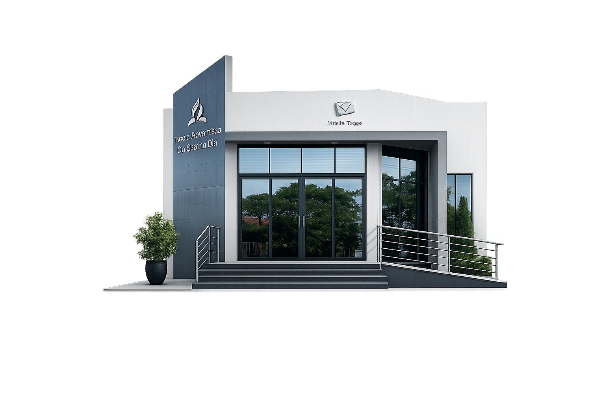

Projeto Som da Esperança
Desenvolva seus dons, fortaleça a fé e toque vidas por meio da música.

Igreja Adventista do Sétimo Dia
“Porque Deus amou o mundo de tal maneira...” João 3:16
Nossa programação
Carregando próximo encontro…
19h30
Comece a semana com esperança.
19h30
Oração e fortalecimento espiritual.
08h45
Escola Sabatina e comunhão com Deus.
Escolha um horário e venha viver esse momento com a gente.
Participe
Carregando agenda…
Memórias
Carregando álbuns…
Fique por perto
Venha conhecer a IASD Vila Eduardo e acompanhe nossos canais.
Encontre seu lugar
Desenvolva seus dons, fortaleça a fé e toque vidas por meio da música.

Para visitantes e pessoas que desejam conhecer a Igreja com respeito, carinho e atenção.

Aprendizagem, diversão e crescimento espiritual para as crianças.

Serviço cristão de apoio a famílias e transformação da comunidade.

Desenvolvimento educacional, espiritual e recreativo para crianças e adolescentes.